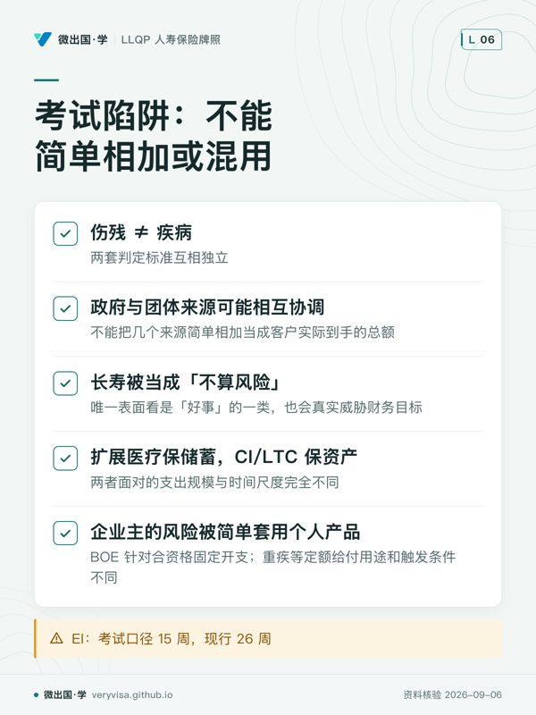

🃏 Flashcards · 3 闪卡 · 3 张 🖼 Slides · 2 幻灯 · 2 页 ✍️ Questions · 7 刷题 · 7 道
意外与疾病 Accident & Sickness P2 稳住 P2 Hold steady
ZH EN ZH + EN
先看这一章怎么考 First, how this chapter is tested
场景匹配题（财务目标 × 四类风险）：给出一个家庭或个人的突发事件（如早逝、短期骨折、癌症确诊、年老需要护理），考你识别这属于哪一类风险、冲击哪一个财务目标（财富积累、退休收入或日常需求），并区分一般死亡风险（寿险）与意外身故责任（AD&D）。 Scenario-matching questions (financial goals x four risk categories): Given an unexpected event for a family or individual (such as premature death, a short-term fracture, a cancer diagnosis, or needing care in old age), tests identifying which risk category it belongs to, which financial goal it impacts (wealth accumulation, retirement income, or daily family needs), and distinguishing general mortality risk (life insurance) from accidental death coverage (AD&D). 需求分类与产品对号题（四大需求）：给出客户想要保护的对象（月度现金流、日常储蓄、已积累资产/遗产、企业固定开支），考你区分保收入（DI）、保储蓄（扩展医疗/牙科/旅行险）、保资产（CI/LTC）与保企业（BOE/关键人险/买卖协议伤残险）。 Needs classification and product-matching questions (four core needs): Given what the client wants to protect (monthly cash flow, routine savings, accumulated assets or estate, or business overhead expenses), tests distinguishing protecting income (DI), protecting savings (extended health, dental, and travel insurance), protecting assets (CI and LTC), and protecting business (BOE, key person insurance, or buy-sell disability insurance). 多来源给付先后与协调题（先付人逻辑）：给出工伤或非工伤、短期或长期伤残场景，考你判断政府项目（工伤补偿、EI 病假福利、CPP-D、省级医保）与团体/个人商业保险谁先赔、谁补缺口，以及为什么不能把各来源给付简单相加。 Multi-source benefit order and coordination questions (first payor rule): Given a work-related or non-work-related, short-term or long-term disability scenario, tests determining whether government programs (workers' compensation, EI sickness benefits, CPP-D, provincial health coverage) or group/individual private insurance pay first, which fills the gap, and why multiple benefit sources cannot simply be added together. 最常丢分的陷阱（看到题干信号就警觉） Traps that cost the most marks (watch for the signal in the stem)
伤残与重疾判定混淆 Confusing disability and critical illness claim triggers 题干出现客户被诊断出某种严重疾病但仍能远程或兼职工作，或因背痛/骨折暂时无法工作但未达重疾列表标准。 The question stem describes a client diagnosed with a severe illness who can still work remotely or part-time, or a client temporarily unable to work due to back pain or a fracture without meeting any covered critical illness definition. 多来源给付简单相加 Simply adding multiple benefit sources together 题干列出两项或以上收入替代来源（如同时提及工伤与 EI、或团体 LTD 与 CPP-D），问客户实际能拿到多少或谁先赔。 The question stem lists two or more income replacement sources (such as mentioning both workers' compensation and EI, or group LTD and CPP-D), asking how much the client actually receives or which pays first. 保储蓄与保资产错位 Confusing protecting savings with protecting assets 题干对比“日常非医保覆盖的处方药/理疗开销”与“需要变卖退休投资或房产来支付的重疾康复/长期护理费用”。 The question stem compares routine non-government-covered prescription drug and physiotherapy expenses with needing to liquidate retirement investments or real estate to pay for critical illness recovery or long-term care costs. 本章考点页：导图、要点表、7 道带逐项解析的练习 →
核实日期：2026-09-05｜现行数字来源：EI（Government of Canada (ESDC)（论坛解读） ）、CPP-D（Government of Canada (ESDC)（论坛解读） ）、WorkSafeBC（WorkSafeBC（论坛解读） ）、MSP（BC 省政府（论坛解读） ）；药品保险协议及覆盖范围见Health Canada官方资料（Health Canada ）。
复核周期：2027-03-01。政府给付类数字每年调整，本页涉及金额均标注抓取日与出处，具体产品名以「见对应章」标注去向。
0. 这一篇解决什么问题
你要考的是 意外与疾病保险模块（Accident and Sickness Insurance，A&S） ，本篇对应 CISRO 能力组件 c1「评估客户需求与处境」，占本模块 35%——是全模块权重最大的一块。这一篇是整个模块的地图：讲哪一种产品之前，先把「一辈子会遇到哪几类会动摇财务目标的风险」「A&S 管哪几类、不管哪几类」「政府先赔什么、私人保险补哪里」说清楚。后面各篇专讲一种产品，都是往这张地图上填格子，这里不重复产品细节。
这一篇帮你做到三件事：① 给出一张「财务目标 × 风险类型」矩阵，说清哪类风险威胁哪个目标，以及为什么一般死亡保障与 A&S 的意外身故给付必须分开；② 把 A&S 的四大需求（保收入 / 保储蓄 / 保资产 / 保企业）对应到本模块具体哪一篇；③ 讲清楚政府给付与私人保险谁先赔、谁补空档，而不是把两者当成可以简单相加的两笔钱。
一、制度设计与底层逻辑：为什么"评估需求"要从"风险有几种"讲起 本节回答 This section answers 区分冲击三大目标的四类风险，划清寿险与A&S及企业风险边界 How to distinguish four risk categories impacting three financial goals, and clarify the boundaries between life insurance, A&S, and business risks 本章考题 1 Question 1
1. A&S 保险管的不是"产品清单"，是"财务目标会被什么打断"
监管方把「评估客户需求与处境」定成本模块权重最大的能力组件，逻辑和 A&S 需求分析的起点一致：代理人不是从产品目录出发问客户"要不要买"，而是从"有哪些财务目标、会被哪几类事件打断"出发，再看 A&S 能不能补上缺口 。所以本章不讲任何产品条款，只建一套分类框架——三大财务目标、四类风险、A&S 接住其中哪几类。
2. 个人与家庭的三大财务目标，遇上四类风险
家庭理财通常追三个目标：财富积累（wealth accumulation） 、退休收入（retirement income）、家庭日常需求（family needs，含房贷、教育、生活开销）。而会打断这三个目标的风险可以归成四类：死亡（早逝）、伤残（暂时或永久丧失劳动能力）、疾病（重大疾病冲击或医疗支出）、长寿（活得比资产撑得住的时间更久）。一般早逝造成的遗属收入缺口主要由人寿保险承担；A&S 中的意外身故及肢体损失保险（AD&D）也可给付意外死亡，不能用它替代涵盖更多死亡原因的寿险。长期护理险则针对符合定义的护理需要，并不保证仅因活得久、积蓄耗尽就给付。考试须先识别题干问的是一般死亡风险，还是具体保单的意外死亡责任。
⚠️
一般死亡风险与意外身故责任要分开
早逝导致房贷缺口时，先分析寿险需要；若题干写明 AD&D，还须判断死亡原因、除外责任和合同条件。BC《Insurance Act》Part 4 s.124(2) 在保险金免受查封的规定里点名了意外身故保险金（accidental death benefits），说明 A&S 可以涉及死亡，但不能据此推断其覆盖所有死亡原因。
3. 企业主的风险是另一套逻辑：系统性 vs 非系统性
企业主的财务目标是盈利能力、顺利传承、以公允市值卖出 三件事，威胁它们的风险分两层：系统性风险（systematic risk）与整体市场/经济相关（利率、需求萎缩、行业周期），A&S 管不了，只能靠经营管理应对；非系统性风险（unsystematic risk，企业特有风险）才是 A&S 的地盘，业主本人的健康就是最典型的一种——业主伤残、患重病或身故，企业的房租、工资等固定开支不会跟着停摆，这正是本模块另设一整篇专讲企业保险的原因，这里不重复。企业主应对风险的两条路是自留（self-funding：现金流/借款/变卖资产）与投保，两者应按损失承受能力、资金流动性、保费和合同限制组合取舍，这条底层逻辑贯穿全模块。
节末检索小测 · 先别往回翻，凭记忆作答 Quick recall check: answer from memory before scrolling back
Marcus, a married father who is the sole earner for his family, carries a large home mortgage. During a needs analysis, he tells his advisor that if he dies prematurely from any cause, his family will lose their home, so he wants an Accident and Sickness (A&S) policy to cover that entire mortgage gap. How should the advisor explain the role of A&S insurance regarding mortality risk?
已婚并育有子女的 Marcus 是家里唯一的经济支柱，背有大额房贷。在需求分析中，他告诉顾问，如果自己因任何原因早逝，家人就会失去房子，因此他想买一份意外与疾病（A&S）保单来覆盖全部房贷缺口。顾问应如何解释 A&S 保险在死亡风险中的作用？
a Premature death from any cause is mainly a life insurance need; an A&S AD&D policy pays a death benefit only when death results from a covered accident. ✓ 正确。一般早逝造成的遗属收入或房贷缺口主要由人寿保险（life insurance）承担；A&S 中的意外身故及肢体损失保险（Accidental Death and Dismemberment，AD&D）仅针对符合合同定义的意外死亡给付，不能替代涵盖更多死亡原因的寿险。 Correct. Income or mortgage gaps caused by premature death from any cause are primarily covered by life insurance; Accidental Death and Dismemberment (AD&D) within A&S pays a benefit only when death results from a covered accident, and cannot substitute for life insurance that covers all non-excluded causes of death.
b A&S insurance strictly excludes all death benefits under provincial law, so no A&S contract can ever pay a benefit upon the insured person's death. ✗ 错误（陷阱：绝对化排除 A&S 死亡责任）。BC《Insurance Act》Part 4 明确提及意外身故保险金（accidental death benefits），A&S 中的 AD&D 可以给付意外身故，不能断言 A&S 完全排除死亡。 Incorrect. Falls into the trap of making an absolute exclusion of death benefits from A&S. Part 4 of the BC Insurance Act expressly references accidental death benefits, and AD&D coverage within A&S can pay upon accidental death, so one cannot assert that A&S excludes all death benefits.
c An A&S critical illness policy will automatically pay off the mortgage upon death from any natural cause, making life insurance unnecessary. ✗ 错误（陷阱：混淆重疾险与寿险）。重疾险（critical illness insurance，CI）是在被保险人确诊合同列明疾病并度过合格期（生存期）后提供一次性生前给付，并非针对所有自然死亡的身故保险。 Incorrect. Confuses critical illness insurance with life insurance. Critical illness insurance (CI) provides a living lump-sum benefit when the insured is diagnosed with a covered condition and survives the survival period; it does not pay upon death from natural causes.
d Longevity risk insurance within an A&S plan is designed to replace lost family income when a breadwinner dies before retirement. ✗ 错误（陷阱：混淆长寿风险与早逝风险）。长寿风险（longevity risk）是指活得比资产能支撑的时间更久，而早逝属于死亡风险（mortality risk）。 Incorrect. Confuses longevity risk with premature mortality risk. Longevity risk refers to outliving one's accumulated assets, whereas premature death belongs to mortality risk.
看答案与每个选项的解析 Show the answer and why each option is right or wrong 答案 Answer ：a
二、2026 现行政策与数字：政府给付层先讲清楚，私人保险才补得对地方 本节回答 This section answers 判断政府给付条件与工伤、EI、CPP-D、MSP的先付顺序 How to determine eligibility conditions for government benefits and the first-payor order among workers' compensation, EI, CPP-D, and MSP 本章考题 2 Question 2
1. 考场与现行对照表：EI 病假福利在"总纲"里的位置
政府给付层的具体数字是本模块考试口径过期密度最高的一块内容，本页只建立框架，逐条数字与推导在后续各篇细讲，这里先给一个贯穿全模块的例子：
这条 EI 数字之所以放在总纲里而不是留到某一篇专讲，是因为它同时出现在考试口径三处（伤残险、客户画像、团体计划三章），任何一篇忘了更新都会造成"同一本讲义两处口径不一致"——本页作为地图，先把这条最大的错位标出来，后面几篇引用它时不必重新论证。
2. 政府给付层的 2026 现行数字快照
CPP-D 需同时满足年龄、缴费及医学条件。通常为 18 岁以上、未满 65 岁，缴费一般要求最近六年中至少四年；有至少 25 年缴费记录时，另有最近六年中三年的路径，其他特别规定仍须核实。「严重」指伤残使人经常不能从事实质有收益的工作；「持久」指长期、期限不确定或很可能致死，并非必须完全不能获得任何报酬。ESDC 通常从认定严重且持久伤残开始的四个月后起付，实际起日看决定书。考试口径的四级定义光谱有助于比较，不能把产品名称当作严格统一的法律等级。
3. 先付人逻辑：政府/团体/个人三层，谁先赔、谁补空档
图：政府先赔，私人补缺口——先看触发原因，再看给付层级
代理人评估需求时最容易犯的错，是把政府给付、团体给付、个人保单当成可以简单相加的三笔钱。实际的逻辑是先看触发原因，再看层级顺序 ：
✕
每个来源都要分别核抵消条款
EI、CPP-D、WorkSafeBC、团体与个人 DI 的抵消规则不同。个人自费保单可能豁免于某份团体合同的全来源上限，但它自身仍可能抵消工伤或车险收入；Canada Life 官方顾问指南就列有这类条件。申领各项待遇应遵守各自时限，最后再按实际合同和政府规则对账，不能把来源简单相加。
节末检索小测 · 先别往回翻，凭记忆作答 Quick recall check: answer from memory before scrolling back
Elena is an adult under age 65 who has contributed to the Canada Pension Plan (CPP) in four of the last six years. Following a non-work-related neurological illness, her physician confirms her condition prevents her from regularly pursuing any substantially gainful occupation and is of indefinite duration. Under the rules for the CPP disability benefit (CPP-D), when do payments typically begin after ESDC determines the severe and prolonged disability started?
未满 65 岁的成年人 Elena 在过去六年中向加拿大退休金计划（CPP）缴费满四年。因非工伤神经系统疾病，医生确认她的状况使其经常无法从事实质有收益的工作，且期限不确定。根据 CPP 伤残给付（CPP-D）规则，在 ESDC 认定严重且持久伤残开始后，通常何时起付？
a Immediately on the day following the medical diagnosis, with no waiting period. ✗ 错误（陷阱：忽略政府项目起付等待期）。CPP 伤残给付（CPP disability benefit，CPP-D）并非确诊次日立即起付，获批前的空档需要靠短期福利、团体/个人险或应急储蓄承担。 Incorrect. Ignores the statutory commencement waiting period for government benefits. CPP disability benefits (CPP-D) do not start the day after diagnosis; the waiting period before benefits begin must be funded by short-term benefits, group or individual insurance, or emergency savings.
b After a one-week waiting period, matching the Employment Insurance sickness benefit rule. ✗ 错误（陷阱：混淆 EI 与 CPP-D 的等待期）。1 周等待期是联邦就业保险病假福利（Employment Insurance sickness benefits，EI）的规则，不是 CPP-D 的起付时间。 Incorrect. Confuses the waiting period of EI with CPP-D. A one-week waiting period applies to federal Employment Insurance (EI) sickness benefits, not the commencement timing of CPP-D.
c Four months after the month in which ESDC determines the severe and prolonged disability began. ✓ 正确。CPP-D 须满足年龄（18 至 65 岁前）、缴费（通常近 6 年满 4 年）及“严重且持久”（severe and prolonged）医学判定，ESDC 通常从认定严重且持久伤残开始的四个月后起付。 Correct. Qualifying for CPP-D requires being between ages 18 and 65, meeting contribution criteria (generally 4 of the last 6 years), and satisfying the severe and prolonged medical standard; ESDC typically begins payments four months after the month the disability was determined to have started.
d Only after the claimant reaches age 65 and converts the disability claim into a retirement pension. ✗ 错误（陷阱：年龄条件颠倒）。申领 CPP-D 的前提之一是未满 65 岁（18 岁以上、65 岁以下），而不是等到 65 岁才开始领。 Incorrect. Inverts the statutory age requirement. Eligibility for CPP-D requires being under age 65 (between 18 and 65), rather than waiting until age 65 to receive payments.
看答案与每个选项的解析 Show the answer and why each option is right or wrong 答案 Answer ：c
三、实务流程：从风险清单到产品清单，代理人这一步怎么走 本节回答 This section answers 运用风险管理四招，把四大需求匹配到对应A&S产品与伤残定义 How to apply the four risk management techniques to match the four core needs to corresponding A&S products and disability definitions 本章考题 3 Question 3
1. 风险管理四招，在 A&S 里怎么落地
风险管理的通用框架是避免、减少、自留、转移 四招，A&S 保险对应的正是"转移"这一招，但代理人评估需求时要先把前三招过一遍，再判断转移的必要性与额度：
2. A&S 四大需求 → 对应产品 → 本模块去哪看
伤残险这一格还牵出一条长青框架：伤残到什么程度算"不能工作"，全模块用一条四级定义光谱衡量（own occupation → regular occupation → any occupation → CPP total disability），从最宽松到最严格，光谱越靠后，获赔门槛越高。这条光谱在伤残险专篇首次系统展开，本篇只需要知道它存在，后面反复用到时不必每次重新解释。
3. 需求分析的起点，不是产品目录
代理人拿到这张地图之后，下一步不是直接翻产品手册，而是走一遍事实发现面谈（fact-find） ：先问客户的个人、家庭、职业收入、资产负债、既有保障、健康与生活方式、目标这几大板块，再用收入法或支出法算出缺口，最后才对照这张地图去挑产品。这一整套流程、每个字段为什么要问，属于本模块另一篇"客户画像"专讲的内容，这里不重复；本篇要传达的只是一句话：先分清风险类型和需求分类，产品清单才挑得对，跳过这一步直接推荐产品，是代理人执业风险最集中的一类失误。
节末检索小测 · 先别往回翻，凭记忆作答 Quick recall check: answer from memory before scrolling back
Before purchasing a disability income insurance policy, David decides to build an emergency savings fund and chooses a longer waiting period instead of a shorter waiting period to reduce his premium. Which risk management technique is David using for the initial waiting period of a potential disability?
在购买伤残收入保险保单之前，David 决定建立一笔应急储蓄基金，并选择更长的等待期而非较短的等待期以降低保费。对于潜在伤残的初始等待期，David 采用的是哪种风险管理招数？
a Risk avoidance, because a longer waiting period prevents short-term illnesses from occurring. ✗ 错误（陷阱：混淆避免与自留）。风险避免（risk avoidance）是干脆不参与产生风险的活动（如放弃高风险运动），拉长等待期并不能阻止疾病发生。 Incorrect. Confuses risk avoidance with risk retention. Risk avoidance means completely refraining from an activity that creates risk (such as giving up hazardous sports); lengthening an elimination period does not prevent illness from occurring.
b Risk retention, because he is bearing the financial consequence of the waiting period himself using his emergency fund. ✓ 正确。风险自留（risk retention / self-funding）是指自己承担风险后果；建立应急基金、用更长等待期换取更低保费，正是自留等待期内损失的做法。 Correct. Risk retention (self-funding) means absorbing the financial consequences of a loss yourself; building an emergency reserve and selecting a longer waiting period to lower premiums is a classic application of retaining the risk during the waiting period.
c Risk reduction, because holding cash in a bank account lowers the probability of becoming disabled. ✗ 错误（陷阱：混淆减少与自留）。风险减少（risk reduction）是指通过健康管理或职业安全培训降低事故发生率或严重程度，存款本身不会降低伤残概率。 Incorrect. Confuses risk reduction with risk retention. Risk reduction involves lowering the frequency or severity of a loss through health management or workplace safety training; holding savings in a bank account does not reduce the probability of becoming disabled.
d Risk transfer, because the insurer will reimburse his emergency fund for the waiting period once benefits begin. ✗ 错误（陷阱：误解等待期给付机制）。风险转移（risk transfer）仅针对等待期结束后的合同责任，等待期内的收入损失由客户自己承担，保险人不会追溯报销。 Incorrect. Misunderstands the waiting period claim mechanism. Risk transfer applies only to contractual coverage after the waiting period expires; income lost during the waiting period is absorbed by the client and is not reimbursed retroactively by the insurer.
看答案与每个选项的解析 Show the answer and why each option is right or wrong 答案 Answer ：b
四、2026 市场：一个 BC 家庭 / 小企业一生会用到的 A&S 产品地图 本节回答 This section answers 按人生与企业阶段匹配A&S险种及自雇EI、药保等政策边界 How to map A&S coverage across personal and business life stages while navigating policy boundaries for self-employed EI and pharmacare
以下按人生/企业阶段给出一张风险与产品的对照地图，只讲机制与去向，不重复讲具体产品条款：
RBC Insurance、Canada Life 与 iA Financial Group 的官方页面提供了不同 DI 与营业费用保障示例。产品名称用来定位合同，不能代替残疾定义、等待期、给付上限和抵消条款。各专篇分别说明已取得的证据及尚需向保险人取得的签发版文件。
背景趋势方面，2024-10-10 通过的 Pharmacare Act（首期覆盖避孕药具与糖尿病用药） ：BC 于 2024-09-12 最早公开宣布与联邦的合作意向，但据加拿大卫生部官方新闻稿，第一个正式签约的省份是曼尼托巴（2025-02-27），BC 于 2025-03-06 签约、是第二个（Health Canada ；早先二手源 Wikipedia（二手源，交叉验证用，非一手） 的「BC 第一个签约」说法已更正）。在实际覆盖层面，BC 的 Plan NP 自 2026-03-01 起为符合资格者全额覆盖列明的糖尿病用药、更年期激素治疗和避孕药具；并非所有处方药，也不能只凭联邦协议日期判断患者何时可用。
节末检索小测 · 先别往回翻，凭记忆作答 Quick recall check: answer from memory before scrolling back
Chloe recently left her salaried job to become a self-employed graphic designer. She has never registered with the federal commission for Employment Insurance (EI) special benefits. If she suffers a non-work-related illness next month that prevents her from working for several weeks, what is her entitlement to federal EI sickness benefits?
Chloe 最近辞去受薪工作，成为一名自雇平面设计师。她从未向联邦机构注册就业保险（EI）特别福利。如果她下个月因非工伤疾病连续几周无法工作，她能获得多少联邦 EI 病假福利？
a She is automatically covered for 55% of her prior self-employed earnings because all Canadian workers participate in EI sickness benefits by default. ✗ 错误（陷阱：误以为自雇者默认参加 EI 特别福利）。自雇者默认不参加联邦 EI 特别福利（Employment Insurance special benefits），不会自动获得 55% 收入替代。 Incorrect. Mistakenly assumes self-employed workers participate automatically in EI special benefits. Self-employed individuals are excluded by default from federal EI special benefits and do not automatically receive 55% income replacement.
b She can register on the day she falls ill and immediately collect sickness benefits after a one-week waiting period. ✗ 错误（陷阱：忽略自雇注册后的 12 个月等待要求）。自雇者即使主动注册 EI 特别福利，通常也需满 12 个月后方可申领，生病当天临时注册无法立即获赔。 Incorrect. Ignores the 12-month waiting period after self-employed registration. Even when self-employed individuals voluntarily register for EI special benefits, they must usually wait 12 months before making a claim; registering on the day of illness does not provide immediate coverage.
c She is not eligible, because self-employed people are excluded by default unless they register voluntarily and usually wait 12 months before claiming. ✓ 正确。自雇者默认不参加 EI 特别福利，必须主动注册且通常需满 12 个月方可申领特别福利，因此她无法靠 EI 覆盖这次短期失能，需依赖个人伤残险或自留储备。 Correct. Self-employed individuals are excluded by default from EI special benefits and must register voluntarily and usually wait 12 months before claiming; therefore, she cannot rely on EI to cover this short-term disability and must rely on individual disability insurance or emergency savings.
d She will receive workers' compensation wage-loss benefits instead, since provincial agencies cover all non-work-related illnesses for independent contractors. ✗ 错误（陷阱：混淆工伤与非工伤边界）。工伤补偿（Workers' Compensation / WorkSafeBC）只赔与工作相关的伤病，非工伤疾病不属于工伤补偿范围。 Incorrect. Confuses work-related and non-work-related boundaries. Workers' compensation (WorkSafeBC) covers only work-related injuries and illnesses; non-work-related illnesses are not eligible for workers' compensation.
看答案与每个选项的解析 Show the answer and why each option is right or wrong 答案 Answer ：c
五、历史变革：这张地图为什么现在要重画 本节回答 This section answers 识别考试资料与现行政策的三类缺口：EI周数、省机构泛称与新立法 How to identify three gaps between exam reference materials and current policy: EI benefit weeks, generic provincial agency names, and new legislation
其一，EI 病假从 15 周延到 26 周（2022-12-18，Bill C-30）。 这是本模块考试口径过期密度最高的一处，且同时出现在三个章节里——旧的 15 周按"短期急病、几个月回岗"设计，但重大手术康复、癌症治疗普遍超过 15 周，延长到 26 周正是补这段空档，直接影响客户画像阶段收入中断时间轴该画多长。
其二，考试口径从未点名任何一个 BC 机构。 考试口径全书用"provincial health care plans""provincial agencies"泛称，从未出现 WorkSafeBC 或 MSP——这是按全国通则写，但 BC 客户问的永远是这两个机构具体覆盖什么。这条差距贯穿全模块，本篇先点出来，各专篇再分别落地。
其三，考试口径定稿早于近两年的联邦立法变化。 2024 年通过的 Pharmacare Act 考试口径全书零提及（考试口径 2022 年成书）——"考试口径写完之后才出现的新制度"和"考试口径数字本身过期"是两种不同性质的缺口，都需要靠回官方现行源补，不能靠猜。
节末检索小测 · 先别往回翻，凭记忆作答 Quick recall check: answer from memory before scrolling back
When preparing for the Harmonized LLQP exam in British Columbia, a candidate notices that the study manual refers generally to 'provincial health care plans' and 'provincial agencies' rather than naming MSP or WorkSafeBC, and uses 15 weeks for EI sickness benefits. How should the candidate handle these differences on the exam versus in real-world practice?
在 BC 省备考统一 LLQP 考试时，考生注意到考试资料用“省级医疗保健计划”和“省级机构”泛称而未点名 MSP 或 WorkSafeBC，且对 EI 病假福利使用 15 周。考生在考场答题与实际展业中应如何处理这些差异？
a On the exam, follow the manual baseline (15 weeks unless the stem says otherwise); with clients, use current rules such as 26 weeks and BC MSP/WorkSafeBC details. ✓ 正确。考试口径按全国通则编写且定稿较早（如 EI 病假 15 周、未点名 MSP/WorkSafeBC），考场答题须服从考试口径与题干给定条件；而在柜台实务中，画客户收入中断时间轴与核对保障必须按现行 26 周及 BC 官方规则执行。 Correct. The exam standard is written using pan-Canadian generalities and established earlier (such as 15 weeks for EI sickness and generic provincial agency references), so exam candidates must adhere to the exam standard and question conditions; in real-world practice, constructing income interruption timelines and verifying client coverage must use the current 26-week standard and official BC rules.
b Always use 26 weeks for EI and $1,741.20 for CPP-D on every exam question, even when the exam options are built on the 15-week manual rule. ✗ 错误（陷阱：把柜台现行值强套到旧口径考题）。正式考试与考试口径练习以指定参考材料及题干为准，不能擅自把现行 26 周当作所有旧口径考题的默认计算基础。 Incorrect. Forcibly applies current practical figures to exam standard questions. The official exam and exam-standard practice questions are governed by the prescribed reference materials and question stems, so candidates must not substitute current 26-week rules into exam-standard questions.
c Tell BC clients during fact-finding that EI sickness benefits only last 15 weeks so that their financial plan matches the LLQP exam. ✗ 错误（陷阱：实务沿用过期考试数字）。在柜台为客户做需求分析时，若沿用已过期的 15 周旧值，会把政府给付空档算得过大，导致实务时间轴失真。 Incorrect. Uses outdated exam figures in real-world practice. Using the older 15-week exam standard during client fact-finding overstates the government benefit gap, distorting the client's actual cash flow timeline.
d Assume that because the LLQP manual does not mention the 2024 Pharmacare Act or MSP by name, BC residents have no public medical or drug coverage in reality. ✗ 错误（陷阱：把考试资料空白当成现实无制度）。考试资料未提 MSP 是因为采用全国泛称，未提 Pharmacare Act 是因为成书早于 2024 年立法，实务中均须查核官方现行覆盖范围。 Incorrect. Mistakenly assumes that omissions in the study manual mean no actual programs exist. The manual omits MSP by name to maintain pan-Canadian neutrality and does not mention the Pharmacare Act because it was published before the 2024 legislation; advisors must verify actual official coverage in practice.
看答案与每个选项的解析 Show the answer and why each option is right or wrong 答案 Answer ：a
六、案例：三个用错风险框架的场景 本节回答 This section answers 诊断平台工伤、长寿护理成本与小微企业混用重疾险三类实务误区 How to analyze three practical pitfalls: platform gig worker injuries, longevity care costs, and small business misuse of personal critical illness insurance 本章考题 4 Question 4
案例 A：本拿比的自雇网约车司机，把"没受伤第一个月"想得太简单
本拿比的网约车司机 Farid 未注册 EI 自雇特别福利，一次交通事故导致骨折。代理人先查事故是否发生在平台接单工作过程中：BC 自 2024-09-03 起把应用平台网约车及配送劳动者纳入工伤制度，平台按该制度承担雇主义务，不能因一般税务身份为自雇就排除 WorkSafeBC。若事故符合工作相关条件，应及时申领；是否还有其他事故赔偿、团体或个人保障，须逐项核对。CPP-D 另须满足缴费及严重且持久伤残标准，短期骨折不能保证获批。这个案例的缺口要从实际可领金额与起付时间算，不能预设头几个月完全没有外部收入。
案例 B：素里夫妇看到岳父的长期护理账单，才意识到"长寿"也是风险
素里的 Owen 与太太原本以为"活得久"只是好事，直到岳父因认知障碍住进长期护理机构、每月费用远超预期，才意识到自己退休后也可能面临同样的资产侵蚀。适用规则：长寿风险的核心不是"活得久不好"，而是"资产能撑的时间可能短于实际寿命"，是矩阵表里唯一看似"好事"却仍要认真对待的风险。结果：这对夫妇把长期护理保险的评估提前排进了未来几年的理财计划。常见错法：把长寿风险和"多活几年多花点钱"的模糊直觉画等号，而不是当成需要提前用产品或储蓄专门应对的财务风险。
案例 C：列治文小餐馆老板把重疾险当成了保企业的方案
列治文小餐馆业主 Mireille 的重疾索赔满足合同定义后，取得约定一次性给付。假设保单没有用途限制，她可以把部分款项用于餐馆房租与工资；问题是同一笔钱还要支付家庭生活及康复安排，可能不足以同时覆盖两边。BOE 按合同报销合资格企业费用，有独立等待期、月限额及最长给付期；企业持有的重疾安排也须核保单所有人及收款人。推荐时应把家庭现金流和企业固定开支分列，再比较保额是否够用，不能说只有 BOE 才能把钱用于企业。
节末检索小测 · 先别往回翻，凭记忆作答 Quick recall check: answer from memory before scrolling back
Tariq works in British Columbia as an app-based ride-hail driver and treats himself as self-employed for tax purposes. While actively transporting a passenger booked through the ride-hail app, he is injured in a traffic collision and cannot work. Which statement correctly describes how his advisor should assess his immediate income replacement sources?
Tariq 在 BC 省从事应用平台网约车司机工作，在报税时按自雇身份处理。在运送通过网约车平台预约的乘客途中，他在交通事故中受伤无法工作。关于他的顾问应如何评估其近期收入替代来源，下列哪项陈述正确？
a Because Tariq files taxes as self-employed, he is automatically barred from WorkSafeBC coverage and must rely entirely on personal savings. ✗ 错误（陷阱：按报税身份直接排除工伤保障）。BC 自 2024-09-03 起已将应用平台网约车及配送劳动者纳入工伤补偿制度（WorkSafeBC），平台承担雇主义务，不能因税务自雇身份就排除工伤申领。 Incorrect. Improperly denies workers' compensation coverage based on tax-filing status. Effective September 3, 2024, British Columbia extended WorkSafeBC coverage to app-based ride-hail and delivery platform workers with platform operators acting as employers, so tax self-employment status does not preclude workers' compensation claims.
b Because he was injured while working on the platform in BC, check WorkSafeBC wage-loss eligibility and any other accident, group or individual cover first. ✓ 正确。事故发生在平台接单工作过程中，在 BC 纳入 WorkSafeBC 保障范围；顾问应先核实工伤申领资格及其他事故赔偿、团体或个人保障，从实际可领金额与起付时间计算缺口，不能预设完全没有外部收入。 Correct. Because the collision occurred while performing active platform work, it is covered under WorkSafeBC in British Columbia; the advisor should first verify workers' compensation eligibility alongside any other accident compensation, group coverage, or individual policies, calculating the actual cash flow gap without prematurely assuming zero external income.
c Tariq will automatically qualify for CPP disability benefits (CPP-D) starting the week after his fracture. ✗ 错误（陷阱：短期骨折误套 CPP-D）。CPP-D 要求伤残达到“严重且持久”（severe and prolonged）标准且通常四个月后起付，短期骨折不能保证获批。 Incorrect. Inappropriately applies CPP-D to a short-term fracture. CPP-D requires a severe and prolonged disability and typically begins payments four months after disability onset; a temporary fracture does not qualify for CPP-D.
d He can stack full WorkSafeBC benefits, full EI sickness benefits, and full disability insurance payouts without any offset review. ✗ 错误（陷阱：多来源简单相加漏抵消）。工伤优先走工伤补偿而非 EI，且各来源之间存在抵消规则与全来源上限，必须逐项核对而不能直接叠加。 Incorrect. Stacks multiple benefits while ignoring offsets. Workplace injuries are covered first by workers' compensation rather than EI, and multiple sources are governed by offset rules and all-source maximum limits that must be reconciled rather than added together.
看答案与每个选项的解析 Show the answer and why each option is right or wrong 答案 Answer ：b
七、考试陷阱与考场与现行对照清单 本节回答 This section answers 汇总七大高频考试陷阱与四项考场对柜台双口径核对清单 How to master the chapter's seven high-frequency exam traps and the four dual-benchmark checklists comparing the exam room to real-world practice
一般早逝与意外身故责任混淆 。一般死亡缺口主要评估寿险，AD&D 的意外身故给付须另核合同，不能断言 A&S 完全排除死亡。伤残 ≠ 疾病 （陷阱形态：定义混淆）。伤残险（DI）看"能不能工作"，疾病险（CI）看"是否被诊断为清单内的疾病"，两套判定标准互相独立：确诊重大疾病未必导致丧失工作能力，反之亦然。政府/团体给付会自动叠加 （陷阱形态：漏抵消）。政府与团体来源可能相互协调；个人保单自身也可能抵消，须分别核规则，不能把几个来源简单相加当成客户实际到手的总额。长寿被当成"不算风险" （陷阱形态：范畴误判）。长寿是四类风险里唯一表面看是"好事"的一类，容易被误以为不需要纳入需求分析，实际它和其余三类一样会真实威胁财务目标。保储蓄与保资产两个分类混用 （陷阱形态：类别混淆）。扩展医疗保的是"储蓄不被日常医疗账单侵蚀"，CI/LTC 保的是"资产/遗产不被大额或长期支出侵蚀"，两者面对的支出规模与时间尺度完全不同。企业主的风险被简单套用个人产品 （陷阱形态：产品误用，对应 CISRO 样题考点）。BOE 针对合资格固定开支，重疾等定额给付可能用于企业，但触发条件、用途和持续期不同；必须分账评估，见案例 C。EI 用考试口径的 15 周而没意识到现行 26 周 （陷阱形态：考试口径过期）。用旧周数估算收入中断时间轴，会把已经缩短的政府给付空档算得过大。
考场与现行对照清单（考场 vs 柜台） ：① EI 病假周数——考场看题干/考试口径 15 周，柜台现行 26 周；② CPP-D 具体金额——考试口径未给（纯机制），柜台用 2026 现行 $1,741.20/月（Government of Canada (ESDC)（论坛解读） ）；③ WorkSafeBC 比例——考试口径给全国区间 80–90%，柜台用 BC 现行约 90%；④ MSP 覆盖范围——考试口径全书未提，柜台以官方现行页的具体覆盖/除外清单为准。
边学边测 ：本章题库共 42。
节末检索小测 · 先别往回翻，凭记忆作答 Quick recall check: answer from memory before scrolling back
Sonia is diagnosed with early-stage malignant melanoma that meets the exact definition in her individual critical illness (CI) policy. After minor outpatient surgery, she experiences no loss of physical function and continues working full-time at her accounting firm without missing a single paycheque. She holds both a CI policy and an individual disability income (DI) policy. Which benefit is triggered?
Sonia 被诊断出早期恶性黑色素瘤，完全符合其个人重疾险（CI）保单中的定义。在接受小型门诊手术后，她的身体机能没有受损，继续在会计师事务所全职工作，没有少领一次薪水。她同时持有重疾险（CI）保单和个人伤残收入（DI）保单。哪项给付会被触发？
a Only the DI policy pays, because any cancer diagnosis automatically creates a total disability claim. ✗ 错误（陷阱：把疾病诊断等同于丧失工作能力）。伤残收入保险（disability income insurance，DI）看的是“能不能工作”，Sonia 继续全职工作且无收入损失，不触发 DI 给付。 Incorrect. Confuses a medical diagnosis with loss of working capacity. Disability income insurance (DI) requires an inability to work; because Sonia continues working full-time with no loss of earnings, no DI benefit is triggered.
b Neither policy pays, because a claimant must suffer a loss of employment income to collect under any A&S contract. ✗ 错误（陷阱：给重疾险强加收入损失条件）。重疾险（critical illness insurance，CI）看的是“是否被诊断为合同清单内的疾病并度过合格期”，不需要以丧失工作能力或收入中断为前提。 Incorrect. Imposes an unrequired loss-of-income condition on critical illness insurance. Critical illness insurance (CI) requires only a confirmed diagnosis of a covered condition and survival past the survival period, and does not require an inability to work or loss of income.
c Both policies pay full benefits simultaneously, because CI and DI share the exact same claim trigger. ✗ 错误（陷阱：伤残 ≠ 疾病定义混淆）。DI 与 CI 的理赔触发标准完全独立：确诊重大疾病未必导致丧失工作能力，反之亦然。 Incorrect. Confuses disability with critical illness claim triggers. Claim requirements for DI and CI are completely independent: being diagnosed with a critical illness does not necessarily cause an inability to work, and vice versa.
d Only the CI policy pays, because CI turns on meeting the illness definition, while DI requires an inability to work. ✓ 正确。伤残（DI）与疾病（CI）两套判定标准互相独立：CI 依据合同疾病定义并在度过合格期后一次性给付，而 DI 要求丧失工作能力；Sonia 符合疾病定义但照常全职工作，因此仅触发 CI。 Correct. Claim criteria for disability (DI) and critical illness (CI) are completely independent: CI pays a lump sum upon meeting the contractual disease definition and surviving the survival period, whereas DI requires an inability to work; because Sonia satisfies the illness definition while continuing to work full-time, only the CI policy is triggered.
看答案与每个选项的解析 Show the answer and why each option is right or wrong 答案 Answer ：d
术语双语表
来源
本页知识卡 不看正文也能拿到这一节的核心内容：先看导读，再看图。点图放大，左右翻页。
放大 ⤢ 同一政府给付项目，考场与柜台可能不是同一口径。 先看 先看左右两格的差别，避免把复习数字直接带到柜台。易漏 CPP-D 具体金额属纯补充；MSP 覆盖范围要回官方现行页核对。下一步 去练习时，先判断题干采用哪套口径。详情与分享 → 
放大 ⤢ 不同问题要分开判断，来源也要分别核规则。 先看 先看误判发生在定义、抵消、分类还是产品用途。易漏 长寿表面像好事，但仍会威胁财务目标；企业主还要分账评估。下一步 去练习时，先问题目在判工作能力、疾病确诊还是给付来源。详情与分享 → 本站依据官方原文自撰 · 出处见正文链接